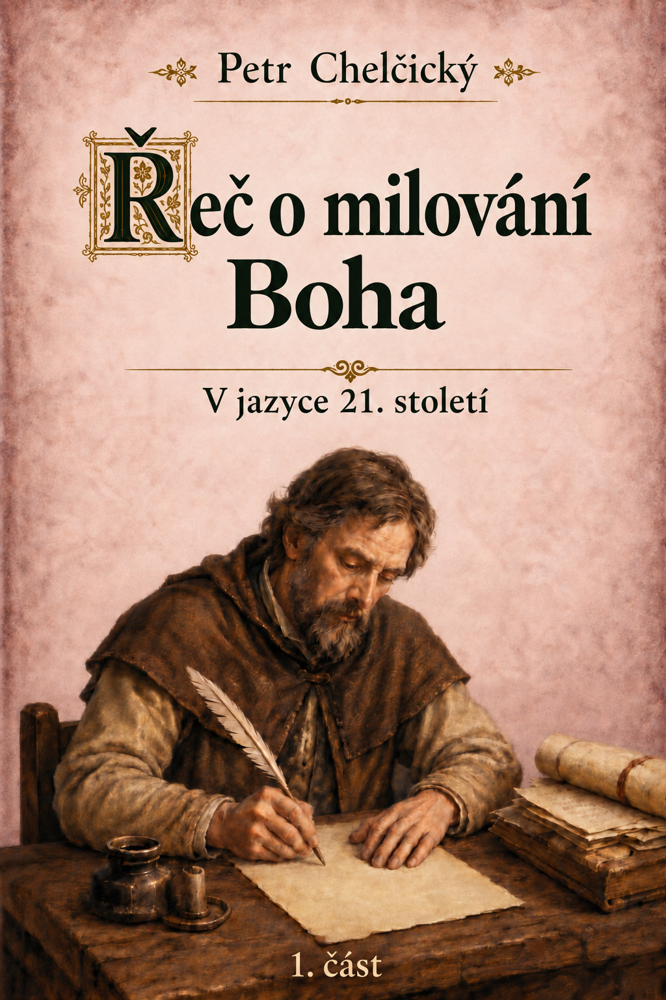

Přejít k obsahu
Domů
›
Traktáty
›
Řeč o milování Boha — První část
vcelkakorektorka.cz
Digitální edice
Úvod
Traktát
Ediční poznámka
Doslov
Tiráž
Řeč o milování Boha — První část

Začít číst
Přejít k traktátu
↓ Stáhnout EPUB
↓ Stáhnout PDF
První část · Revidované vydání · 28. října 2026